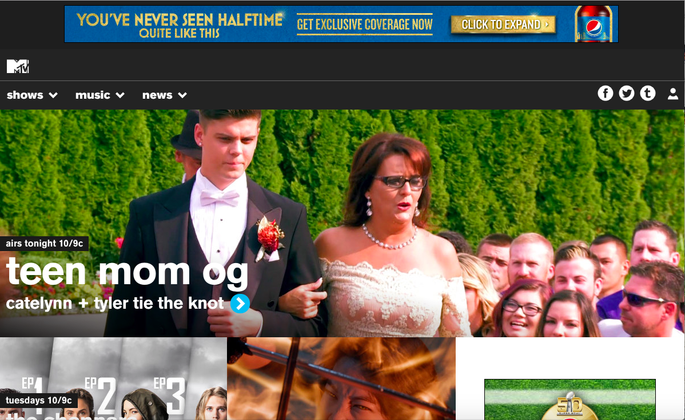
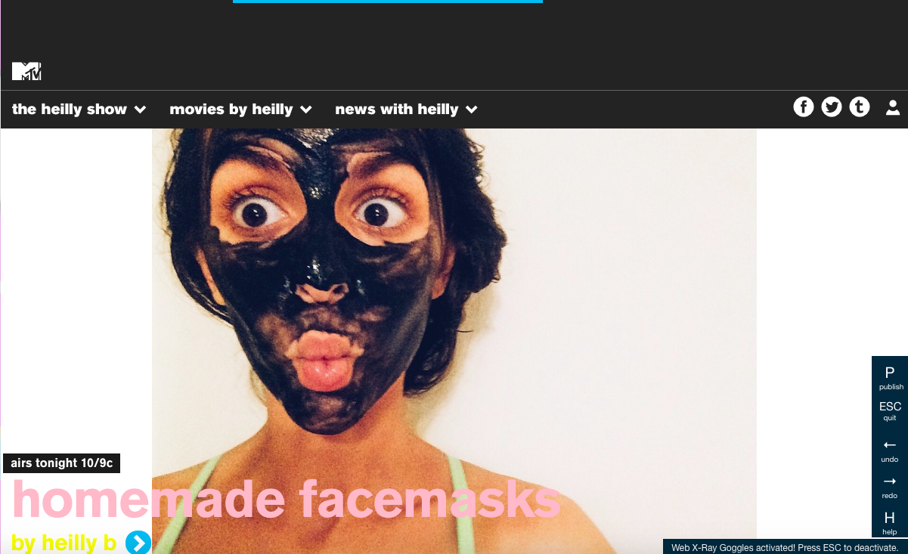
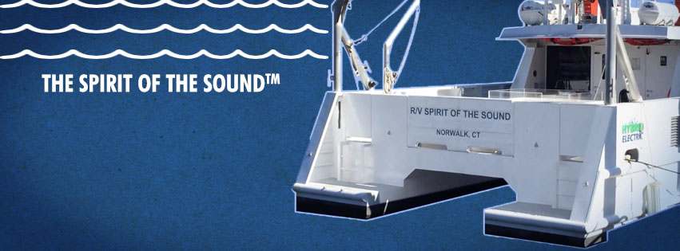
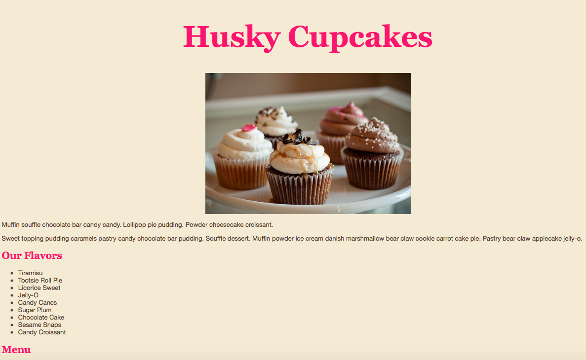
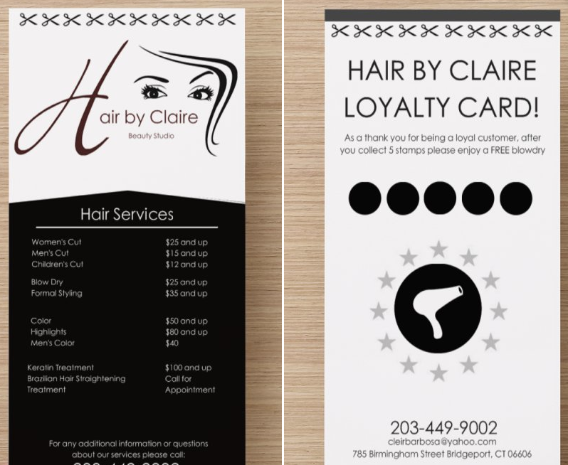

before + after
-  before january 2016: before i learned anything about HTML and CSS, i learned about the concept of forking and open source webpage, and for lack of better word, let's call it remixing a webpage! my web design professor, adam, has use Mozilla's X-Ray Goggles to reassemble a webpage to make our own. of course, I chose MTV :) this simple exercise totally blew my mind and made me realize how fun you can really have with coding!
- 
social media
-  spring 2016: i created a few social media elements on photoshop for Maritime Aquarium to attract customers to their newest attraction, "Spirit of The Sound" cruise boat! very simple project, i love working with social media and coming up with fun ways to market different products/services.
- sample instagram post (size adjusted)
web design + type
-

HTML + CSS
february 2016: this was my very first web page, i'm proud to say I've grown alot in the programming world (HTML + CSS have been tackled, next up is Javascript!)
flyers
-

hair by claire: brand promotion
summer 2015: my mom is a hairdresser and always needs help promoting her business, this is the most recent project i designed + created for her!